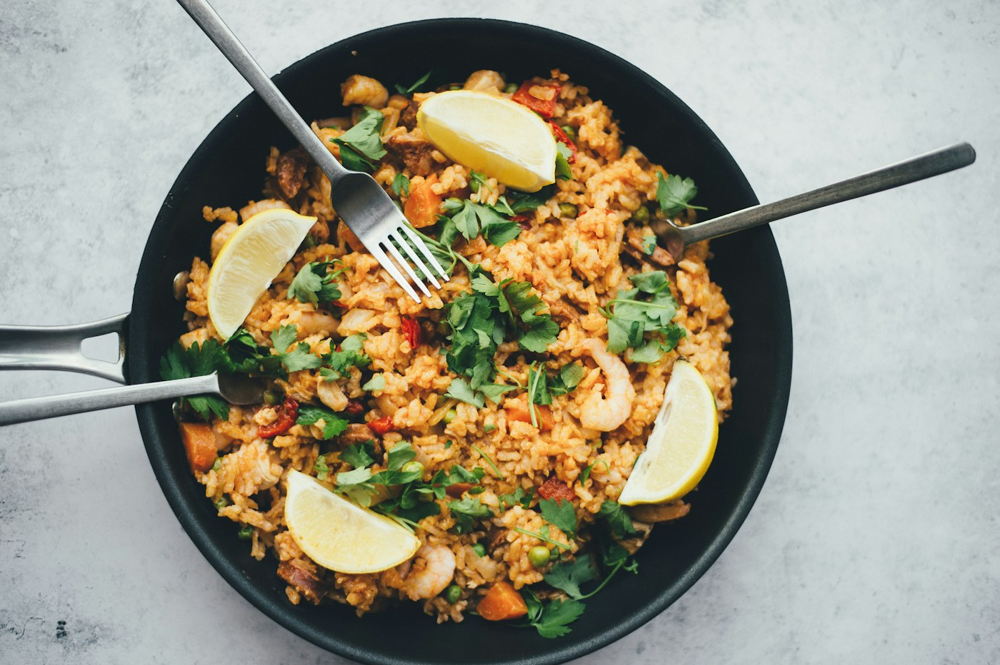
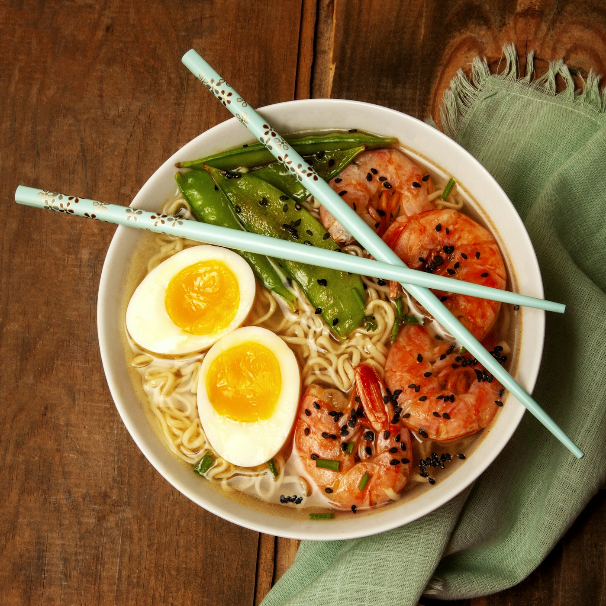
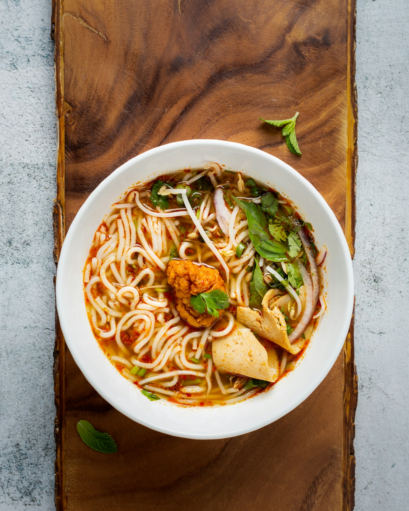

01 / LOCAL FAVORITE
成都火锅
成都火锅以牛油红汤最具代表性，豆瓣、花椒与辣椒在锅中翻滚，麻辣鲜香而不失层次。毛肚、鸭肠讲究“七上八下”，配一碟香油蒜泥，热烈的锅气就是成都人分享生活的方式。鸳鸯锅也适合不习惯重辣的食客。
推荐打卡地点
蜀九香火锅（玉林片区门店）。可乘地铁 1 号线至倪家桥站后步行前往；具体门店与营业时间请出行前查询。
返回美食列表 ↑A TASTE OF CHENGDU
麻辣鲜香，是成都人的热情；一箸一味，都是生活的好滋味。
选择一道美食，打开它的风味故事
以及本地人常去的推荐地点。
01 / 麻辣鲜香成都火锅沸腾的红油锅底，涮出热烈的成都性格。查看美食详情 ↗

02 / 川菜经典麻婆豆腐麻辣鲜香与嫩滑豆腐，一勺就是下饭经典。查看美食详情 ↗
03 / 百年小吃钟水饺红油裹着甜辣，一口就是老成都的滋味。查看美食详情 ↗
04 / 街头面香担担面面条劲道，芽菜肉臊与红油相映生香。查看美食详情 ↗ 05 / 红油凉菜夫妻肺片牛肉牛杂薄切入味，红油与花椒香气悠长。查看美食详情 ↗ 06 / 甜辣交织甜水面粗面筋道，浓甜酱香里带着恰到好处的辣。查看美食详情 ↗推荐地点仅作寻味参考，营业时间与门店信息请出行前查询。
01 / LOCAL FAVORITE
成都火锅以牛油红汤最具代表性，豆瓣、花椒与辣椒在锅中翻滚，麻辣鲜香而不失层次。毛肚、鸭肠讲究“七上八下”，配一碟香油蒜泥，热烈的锅气就是成都人分享生活的方式。鸳鸯锅也适合不习惯重辣的食客。
蜀九香火锅（玉林片区门店）。可乘地铁 1 号线至倪家桥站后步行前往；具体门店与营业时间请出行前查询。
返回美食列表 ↑02 / SICHUAN CLASSIC
麻婆豆腐相传创于清代成都万福桥附近，以嫩豆腐、牛肉末、郫县豆瓣和花椒烹制。豆腐细嫩，红亮的汤汁裹着浓郁酱香，麻、辣、鲜、香与滚烫热气层层交织，是最能体现川菜调味特色的家常菜之一。
陈麻婆豆腐（青华路店）。可乘地铁 4 号线至草堂北路站，步行前往青华路一带；建议提前确认门店信息。
返回美食列表 ↑03 / OLD-TOWN SNACK
钟水饺是成都传统小吃，以猪肉馅和薄面皮包制，煮熟后淋上复制酱油、红油与蒜泥。入口先感受到酱汁的微甜，随后是醇厚咸鲜与香辣；馅料细嫩、皮薄爽滑，滋味鲜明却不复杂。
钟水饺（人民公园附近门店）。可乘地铁 2 号线至人民公园站，步行游览人民公园、琴台路一带。
返回美食列表 ↑04 / STREET NOODLES
担担面源自街头挑担叫卖的市井生活。细面煮熟后拌入芽菜肉臊、红油、花椒与酱汁，面条劲道，分量精巧，咸鲜麻辣中带着炒芽菜的清香。吃前拌匀，让酱汁均匀裹住每一根面条。
文殊院及文殊坊周边老字号小吃店。可乘地铁 1 号线至文殊院站，步行探访；点餐前可询问店内是否供应担担面。
返回美食列表 ↑05 / CHILLED SICHUAN DISH
夫妻肺片精选牛肉、牛杂卤制后薄切，加入红油、花椒、芝麻与香料拌制。入口麻辣鲜香、肉质细嫩，是一道冷盘川菜。名字源自成都街头一对夫妻经营的凉拌牛杂摊，记录着市井小吃的来历。
夫妻肺片总府路店（市中心）。可乘地铁 2 号线至春熙路站，步行前往总府路一带；出行前确认门店营业信息。
返回美食列表 ↑06 / SWEET & SPICY
甜水面以手工粗面为主角，面条煮熟后拌入复制酱油、红糖、芝麻与辣椒油。粗面筋道耐嚼，甜香先至，随后浮现酱香与微辣；独特的甜辣平衡，是成都小吃里令人印象深刻的一味。
洞子口张老二凉粉（文殊院附近）。可乘地铁 1 号线至文殊院站，步行前往文殊坊，品尝当地传统小吃。
返回美食列表 ↑